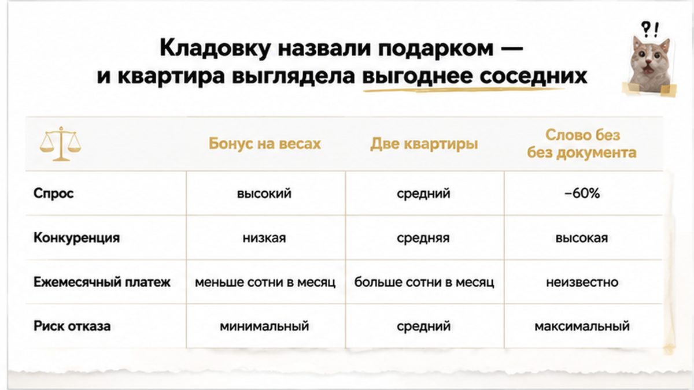
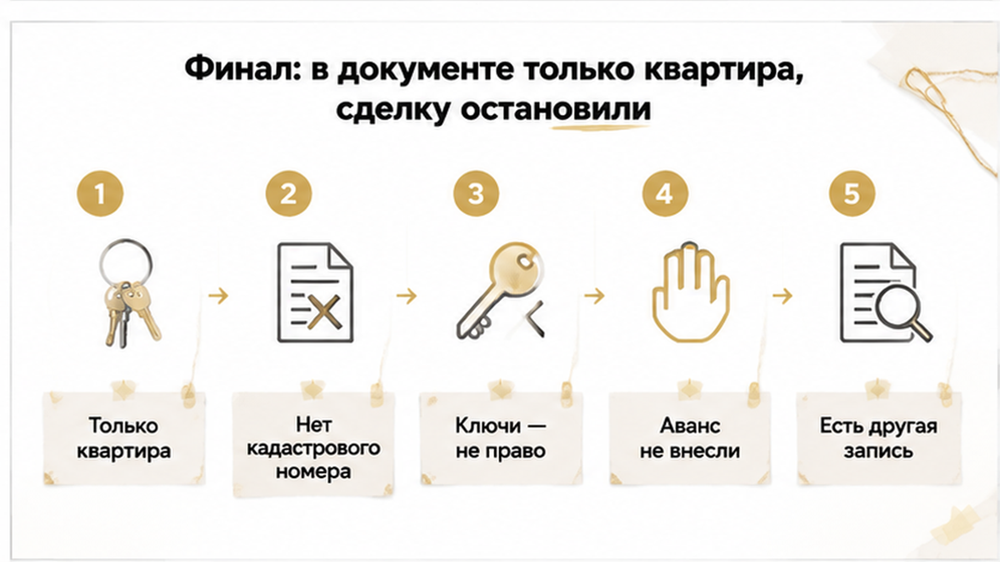
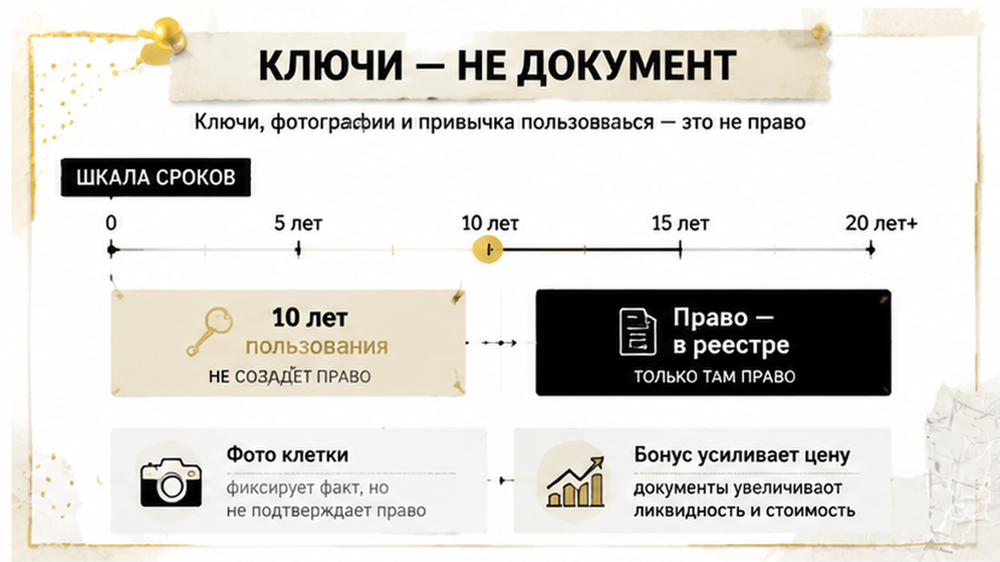
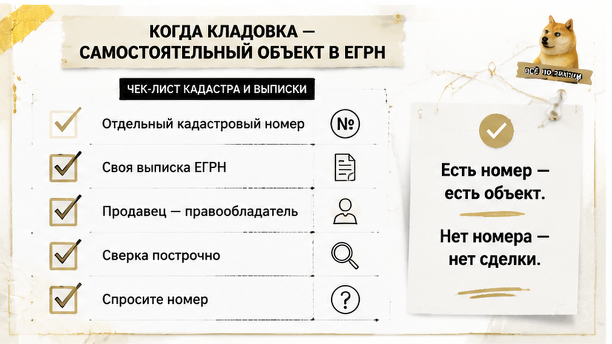
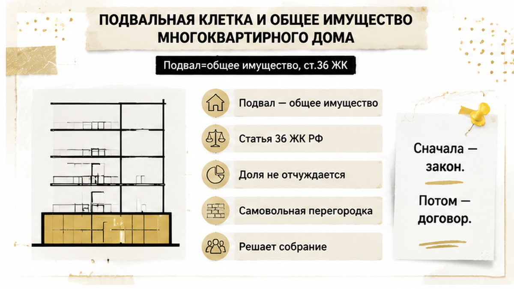
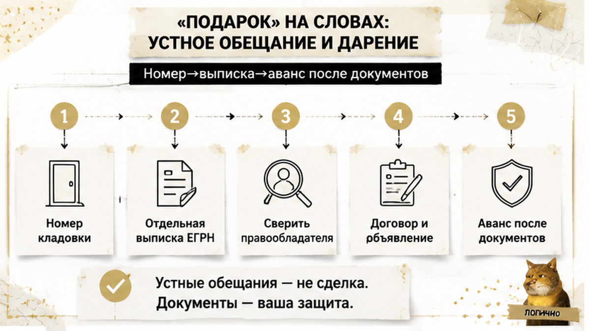

«Кладовка в подарок» — три слова, из-за которых одна квартира внезапно стала лучше двух соседних. А за словами — ни строчки в документах.
Семья в Тюмени выбирала вторичку в доме с подвалом: ипотеку уже одобрили, дату в МФЦ согласовали, оставалось внести аванс. Риелтор продавца называл кладовку подарком к квартире — показывал ключи, фотографии металлической клетки внизу, говорил, что помещением пользуются много лет и «так у всех в доме». За три дня до аванса покупатели заказали расширенную выписку ЕГРН по квартире. В документе была только квартира: ни отдельной записи о кладовке, ни её кадастрового номера, ни подтверждённого права продавца на неё. Аванс не внесли, сделку остановили, а через некоторое время вышли на другой объект — там кладовка была оформлена самостоятельной записью в реестре. Сюжет собирательный, смоделированный из типичных тюменских сделок, — не репортаж об одной семье, но узнаваемый до мелочей.
Я Святослав Шакин, риелтор в Тюмени, проект The Риэлтор. Разбираю такие сделки до аванса, а не после. Пишите в Telegram или в MAX — посмотрю ваш объект и скажу, что заказывать в первую очередь.

Бонус в объявлении работает не как строчка в тексте. Он работает как перевес на весах. Две квартиры одинаковы по площади, этажу, состоянию и цене — но в одной «идёт кладовка». И покупатель уже мысленно составил туда велосипеды, зимнюю резину, коляску, ёлку и коробки, которые не влезли на балкон. С этой секунды он сравнивает не два объекта, а объект с бонусом и объект без бонуса. Разница в цене начинает казаться справедливой сама собой.
Продавцу это выгодно, и криминала в самом приёме нет — пока за словом «подарок» стоит документ. Беда начинается там, где бонус становится аргументом сделки, но его ни разу не проверяют отдельно. Ту же механику я разбирал в истории, где маркетинговое обещание закрывало собой то, что стоило проверить первым: покупателя ведут к решению через эмоцию, а юридическая часть остаётся за скобками разговора.
Рыночный фон тоже подталкивает продавцов к таким аргументам. По публикации NashGorod.ru от 20 августа 2026 года, в Тюмени спрос на кладовые и паркинги в новостройках упал больше чем на 60% год к году: раньше к квартирам «пристёгивали» примерно 200–300 кладовых и машино-мест в месяц, в 2026-м — меньше сотни. Это рыночная статистика, и о правовом статусе конкретной клетки в подвале вторичного дома она не говорит ничего. Зато она хорошо объясняет, почему подсобное помещение так охотно превращают в бесплатный бонус: продать отдельно стало трудно, а усилить им квартиру — легко.
Самый неудобный момент для проверки — тот, в котором проверять уже страшно. Ипотека одобрена. Банк ждёт. Дата в МФЦ стоит в календаре. Продавец торопит, риелтор напоминает, что «на такую квартиру очередь». Остановиться здесь психологически тяжелее всего: кажется, что любой лишний документ обрушит всю конструкцию. На практике всё наоборот — именно в этой точке выписка стоит дешевле любого будущего разбирательства.
Покупатели заказали расширенную выписку ЕГРН по квартире продавца. Шаг стандартный, его делает почти каждый внимательный человек: смотрят собственника, основание права, ограничения, аресты, залоги. Заказали по квартире — и правильно сделали. Документ ответил не только на вопрос о квартире.
Тут важно понимать логику самой бумаги. Выписка описывает конкретный объект недвижимости: тот, у которого есть кадастровый номер и запись о праве. Квартира — один объект. Отдельное нежилое помещение в подвале, если оно вообще существует как самостоятельная недвижимость, — другой объект, со своим кадастровым номером и своей выпиской. Одна бумага не закрывает два случая. Строка в реестре умеет останавливать сделки: даже при одобренной ипотеке запись в ЕГРН оказывается сильнее договорённостей. Разница только в том, что там строка была, а здесь её не оказалось вовсе.

В выписке была указана только квартира. Ни отдельной записи о кладовке, ни её кадастрового номера, ни подтверждения, что продавец правообладатель какого-то дополнительного помещения. На прямой вопрос продавец предъявил то, что было: ключи, фотографии клетки в подвале, многолетнее пользование и аргумент «так у всех в доме». Ни ключи, ни привычка, ни срок владения документом о праве не являются.
Дальше выяснилось главное: быстро это не чинится. Продавец не мог выделить кладовку в самостоятельный объект и зарегистрировать на неё право — ни к дате аванса, ни к согласованной дате в МФЦ. Покупатели аванс не внесли и сделку остановили. Позже они вышли на другую квартиру, где кладовка была оформлена отдельной записью в ЕГРН, — то есть получили ровно то, что им обещали в первом варианте, только с документом.
Финал скучный, и потому хороший: денег никто не потерял. Механика та же, что в истории, где риск всплыл в выписке и сделку остановили до аванса. Разница между неприятным разговором с продавцом и долгим спором о деньгах почти всегда укладывается в один документ, заказанный вовремя.

Когда я прошу у продавца документы на «подарок», мне почти никогда не дают выписку. Мне дают связку ключей. Иногда фотографию клетки в подвале, снятую с телефона против света. Иногда фразу, которую я слышал десятки раз: «мы этой кладовкой десять лет пользуемся, никто ни разу слова не сказал». Всё сказанное — правда. И ничего из этого не документ.
Право собственности на недвижимость подтверждается записью в реестре, а не тем, у кого на руках ключ. Ключ говорит о доступе. Фотография — о том, что в подвале действительно стоит перегородка. Десять лет пользования — о сложившемся между соседями порядке, который держится на общем молчаливом «да ладно, пусть стоит». Ни один из трёх аргументов не отвечает на главный вопрос покупателя: что именно я получу после регистрации сделки и смогу ли я распорядиться этим метром через год, когда сам буду продавать квартиру.
Разница вылезает потом: меняется управляющая компания, приходит проверка по коммуникациям, сосед решает, что перегородка мешает заносить велосипед. В этот момент ключи перестают работать как аргумент.
Ещё одна деталь, которую я вижу в тюменских объявлениях постоянно: бонус усиливает цену, не меняя саму квартиру. Кладовка, парковочное место, «оставим кухню» — объект становится привлекательнее соседних, хотя внутри ничего не изменилось. Приём рабочий и сам по себе не мошеннический. Но проверять его нужно ровно так же, как я разбирал в истории, где скидку в два миллиона обещали, а в квартире прятали риск. Правило простое: чем ярче бонус, тем спокойнее смотрим документы.

Теперь про хорошую версию событий — она бывает чаще, чем кажется после первых абзацев. Кладовка вполне может быть нормальной недвижимостью: её продают, дарят, закладывают по ипотеке наравне с квартирой. Просто для этого она должна существовать не в подвале, а в реестре.
Что делает кладовку самостоятельным объектом:
Дальше техника скучная и потому надёжная. Есть кадастровый номер — заказываю по нему отдельную выписку и сравниваю построчно с тем, что мне рассказали на просмотре: адрес, площадь, вид объекта, правообладатель, ограничения и обременения. Не «в целом похоже», а по каждой строке. Бывает, что помещение существует, оформлено как положено, но принадлежит не продавцу, а его матери или прежнему собственнику квартиры. Это уже совсем другая сделка и другой разговор о сроках.
Важный нюанс, который спасает от лишней паники: отсутствие строки о кладовке в выписке на квартиру само по себе ещё не доказывает, что отдельного объекта нет. Выписка на квартиру описывает квартиру — и только её. Отдельное нежилое помещение проверяется по своему кадастровому номеру и своей выписке. Поэтому правильный вопрос продавцу звучит не «а где кладовка в вашей выписке», а «дайте кадастровый номер кладовки». Если номера нет и взять его негде — перед вами не недвижимость, а место в подвале.
Про то, как одна строка в реестре разворачивает уже согласованную сделку, я подробно писал в разборе, где ипотеку одобрили, а регистрацию отменила строка в ЕГРН. Логика та же самая: банк смотрит на своё, реестр — на своё, и договорённости сторон здесь никого не интересуют.
Отдельно меня цепляет статистика поисковых запросов по нашему региону. «Выписка ЕГРН» — больше четырёх тысяч показов в месяц: люди проверяют квартиры массово и вдумчиво. А узкие запросы вроде «кладовка ЕГРН» или «ЕГРН на кладовку» — единичные, буквально три показа. Получается, покупатель разбирает основной объект по косточкам, а бонус берёт на веру. Хотя именно бонус чаще всего и оформлен хуже всего.

А теперь вторая версия событий — в старом фонде и панельках она встречается чаще. Подвал не ничейная территория, где кто первый поставил перегородку, тот и хозяин. Подвал — общее имущество дома.
Жилищный кодекс в статье 36 прямо относит к общему имуществу помещения, предназначенные для обслуживания более одного помещения в доме, включая соответствующие подвалы. Постановление Правительства № 491 добавляет конкретики: технические подвалы с инженерными коммуникациями и аналогичные помещения входят в состав общего имущества. Если проще: когда через ваш будущий «склад для колёс» идут трубы и стояки — это техническое помещение дома, а не чулан продавца.
Дальше вступает статья 37 ЖК РФ: доля в праве общей собственности на общее имущество следует за правом на квартиру и отдельно от неё не отчуждается. Отсюда вещь, которую я повторяю на каждом просмотре. Собственник квартиры физически не может единолично подарить вам кусок общего подвала. Не потому что он жулик. А потому что этот кусок ему одному не принадлежит.
Самовольная перегородка, металлическая клетка, дверь с личным замком и двадцать лет спокойного пользования права собственности не создают. Максимум — сложившийся порядок на молчаливом согласии соседей. А если в помещении проходят коммуникации, может возникнуть и обратное требование: обеспечить доступ или демонтировать ограждение. И тогда покупатель, который доплатил за квартиру «с кладовкой», остаётся без кладовки и без доплаты одновременно.
И отдельно про то, кто вообще решает судьбу подвала. Статья 44 ЖК РФ относит вопросы пользования общим имуществом к компетенции общего собрания собственников. Не риелтора. Не продавца. И не председателя, который «сказал, что можно». Поэтому фраза «в нашем доме так у всех» описывает быт дома, а не правовой статус конкретного метра под лестницей.
«Подарок» — это не юридический термин. Это упаковка. Юридический смысл начинается там, где появляется бумага, а не там, где на просмотре звучит приятная фраза.
Передача отдельного объекта недвижимости у нас работает через регистрацию перехода права. Пока запись не внесена — покупатель не собственник. И неважно, насколько уверенно продавец говорил про кладовку и насколько дружелюбно улыбался его риелтор.
Что не является подтверждением права: устное обещание, текст объявления, переписка в мессенджере, скриншот с фотографией клетки в подвале, связка ключей на руках. Всё это бывает искренним. Ни одно из этого не предъявишь ни новому соседу, ни управляющей компании, ни суду.
Если кладовка действительно существует как самостоятельное помещение и стороны решили передать её бесплатно — дарение недвижимости оформляется письменно, а переход права регистрируется. Всё. Других вариантов «подарить метры» нет.
На практике за фразой «кладовка в подарок» я вижу три разные истории. Первая: продавец имеет в виду доступ к общему имуществу дома — тому, чем и так пользуются все собственники. Вторая: речь про ключи от самовольно огороженного угла, где никакого отдельного объекта нет и не было. Третья: это просто аргумент, чтобы квартира на фоне соседних выглядела выгоднее при той же цене. На просмотре все три звучат одинаково приятно. В реестре — по-разному.
Бонус смещает внимание с документов на выгоду — ровно так же, как обещанная скидка. Я разбирал эту механику в истории, где обещанные два миллиона скидки оказались упаковкой для риска внутри квартиры. Чем ярче бонус, тем спокойнее покупатель относится к тому, что бонуса нет ни в одной выписке.
И отдельно про деньги. Если кладовка повлияла на выбор между двумя похожими квартирами — она уже вошла в стоимость вашего решения. Вы платите за объект, которого может не быть в реестре.

Порядок короткий. Он занимает меньше времени, чем поездка на второй просмотр. Главное — сделать это до денег, а не после.
Когда кладовка оформлена по-настоящему, её нельзя «дописать словами». В договоре она идёт отдельно: кадастровый номер, адрес, площадь, право продавца, обязанность передать и зарегистрировать переход права и последствия, если регистрация не состоится. Это не бюрократия. Это единственный способ превратить обещание в обязательство.
И про сроки, потому что об этом спрашивают чаще всего. Выделить подвальную площадь в самостоятельный объект — это, как правило, решение общего собрания собственников, проект, согласования, технический план, кадастровый учёт и только потом регистрация права. За три дня до сделки такой путь не проходят. Одобренная ипотека и согласованная дата в МФЦ не превращают общий подвал в частную кладовку и не ускоряют реестр ни на день.
Разница между «проверили до аванса» и «разбираемся после» — принципиальная. Когда деньги уже ушли, разговор совсем другой: я показывал это в истории о том, как расписку на квартиру написали, а денег на счёте не оказалось. До аванса вы просто отказываетесь от бонуса. После — пытаетесь вернуть своё.
Кладовку «в подарок» вы проверяете отдельной выпиской до аванса или верите словам в объявлении? Напишите в комментариях — интересно, у кого бонус оказался с кадастровым номером, а у кого только с ключами.
Обещают кладовку, паркинг или «место в подвале» бонусом — пришлите мне объявление и кадастровый номер до внесения аванса. Посмотрю, есть ли объект в реестре: Telegram или MAX.
| Что проверяем | Какой документ смотреть | Что должно совпасть | Если не совпало |
|---|---|---|---|
| Квартира продавца | Расширенная выписка ЕГРН на квартиру | Адрес, площадь, правообладатель, отсутствие неожиданных ограничений | Сначала разобраться с квартирой, потом говорить о бонусах |
| Кладовка как отдельное помещение | Отдельная выписка ЕГРН по кадастровому номеру кладовки | Кадастровый номер, вид объекта, площадь, правообладатель — ваш продавец | Права нет: исключить кладовку из цены или не выходить на аванс |
| Клетка в техническом подвале | Документы на помещение, решения общего собрания, техническая документация дома | Помещение не относится к общему имуществу и учтено как самостоятельный объект | Это общее имущество: продавец не вправе передать его лично вам |
| Обещание «в подарок» | Проект ДКП и приложения | Кладовка описана в договоре с кадастровым номером и обязанностью зарегистрировать переход права | Бонуса в сделке нет — он есть только в объявлении |
Таблица нужна ровно для одного: не смешивать три проверки в одну. Выписка на квартиру подтверждает квартиру. Выписка на кладовку подтверждает кладовку. Статус подвала подтверждают документы дома. Один документ не отвечает за три объекта.
Та тюменская семья потеряла один вечер и стоимость одной выписки. Больше ничего. Они остановились до аванса, не стали давить на продавца и не стали ждать чуда за три дня — спокойно вернулись к подбору и через некоторое время вышли на другую квартиру. Там кладовка была отдельной записью в ЕГРН: кадастровый номер, площадь, право продавца. Бонус остался бонусом, только уже настоящим.
Вторичку в Тюмени покупают, и покупают нормально. Просто бонус смотрят до денег, а не после. Кладовка, паркинг, «место в подвале» — это либо запись в реестре, либо разговор. Разница стоит одной выписки и одного вопроса продавцу, заданного вовремя.
Материал проверен: Святослав Шакин, личный риэлтор в Тюмени. Ориентир для покупателя, не индивидуальная юридическая консультация.